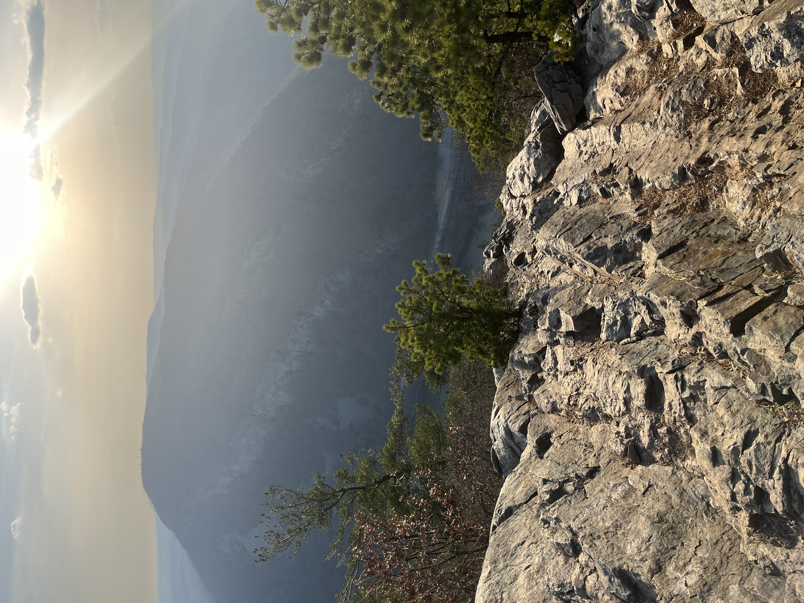
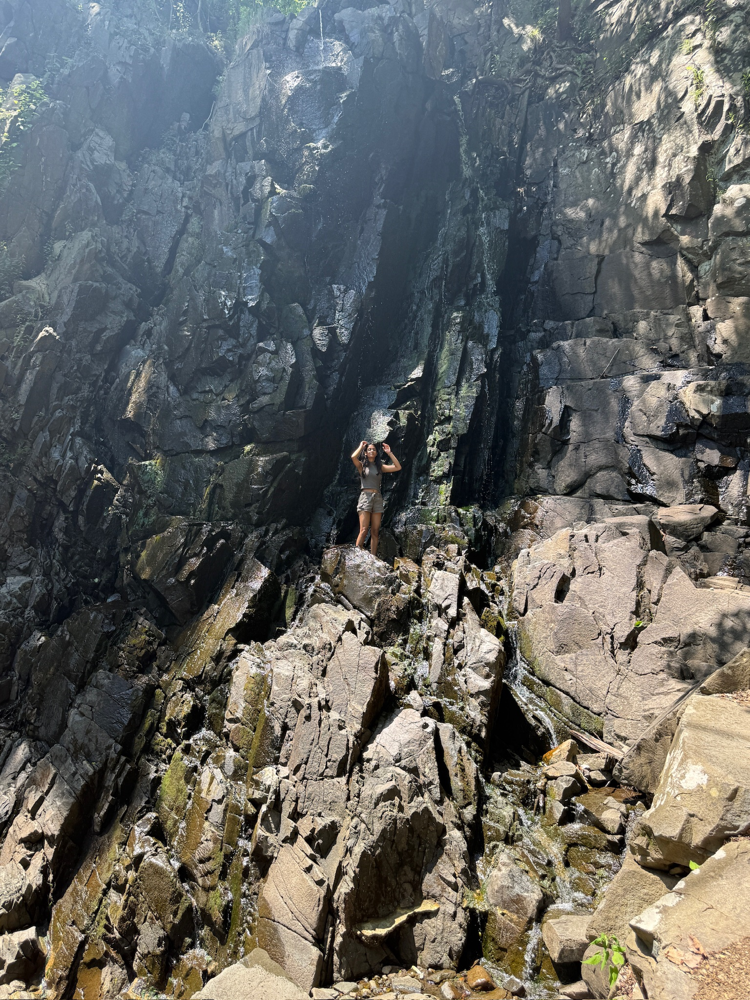
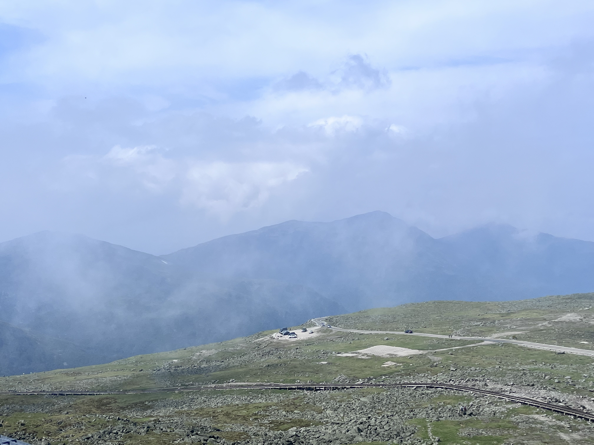
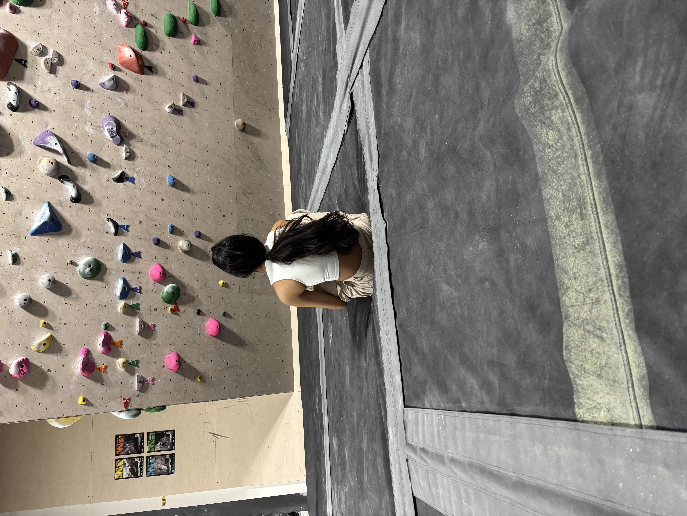
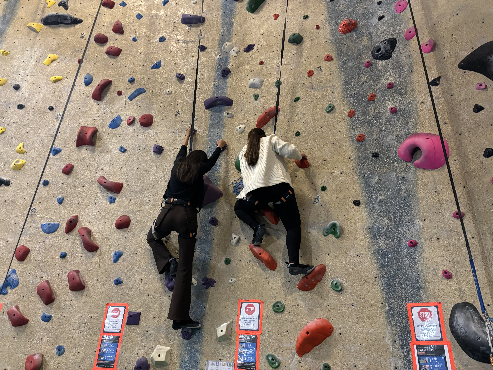
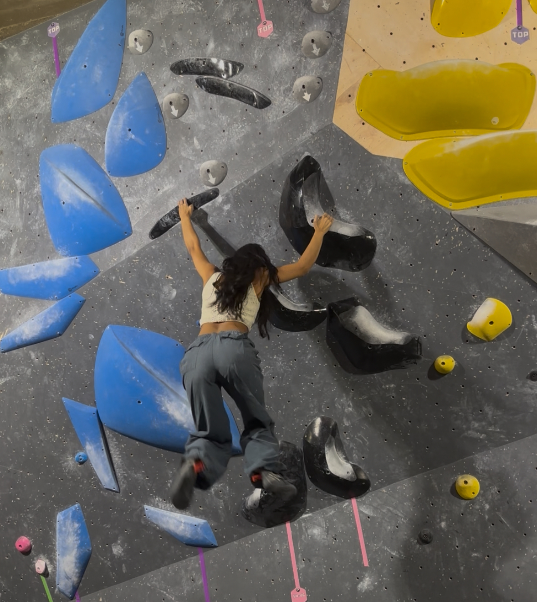
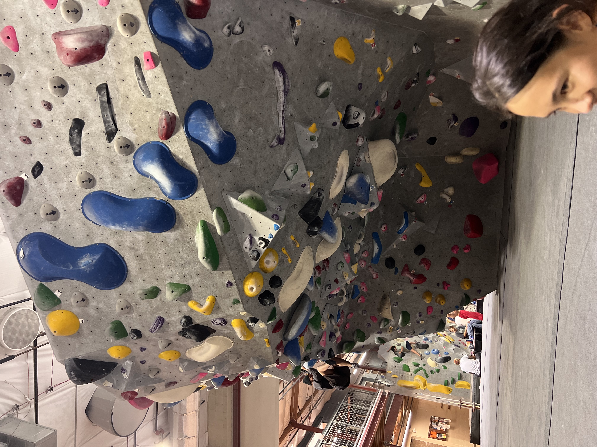
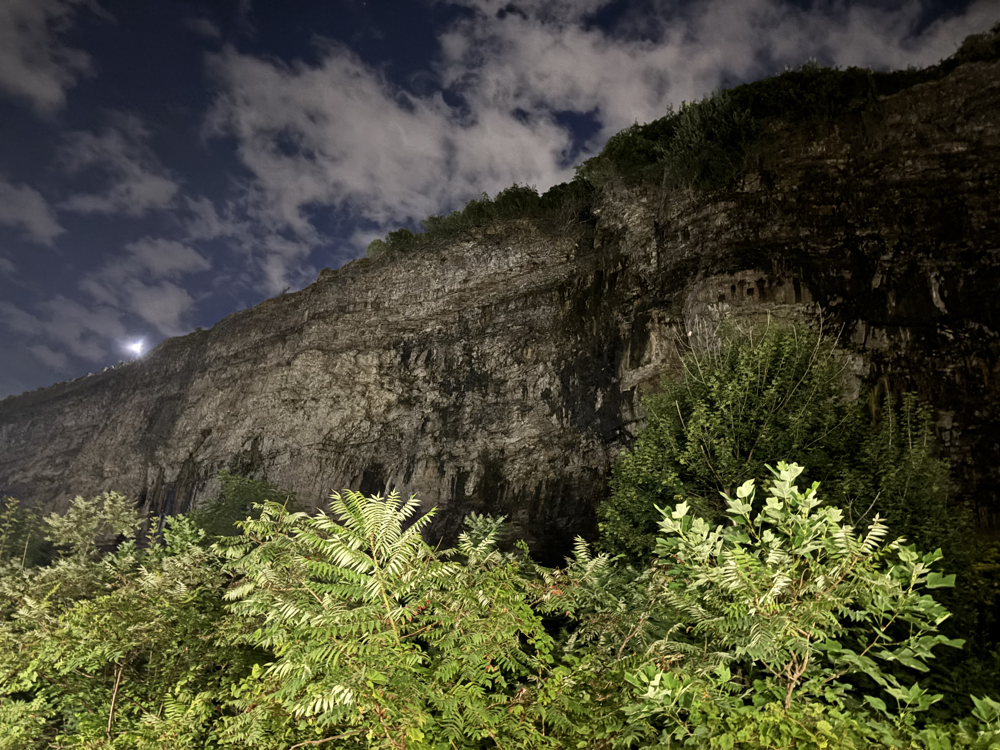
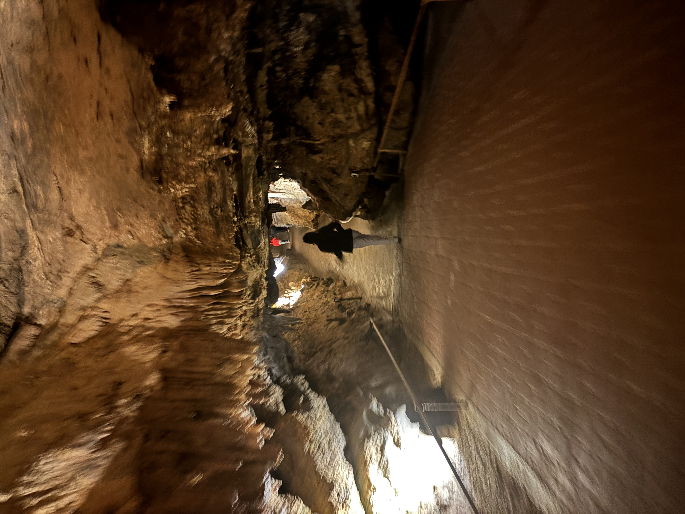

Feature
An essay on climbing and life



Don't look down. As climbers, we are always looking up. Whether that be on the wall, reaching for the top hold, or from the ground studying the climb. This philosophy often translates to many other modes of life. Rock climbing can be the ultimate test of your mental and physical strength and internal regulation. At its core, climbing teaches us more than just what's on the wall, it extends far beyond, shaping the way we approach many aspects of our lives. It encourages us to think systematically, feel deeply, and live sustainably.
New climbers with their infinite excitement readily rush into climbs and are often humbled by the unique challenges they might not have expected to face. After falling off a few times, they quickly learn to first read the climb. Before a seasoned climber even touches the wall, they have spent a good amount of time studying the wall and mapping out their movements. The more experienced a climber, the better they will be at understanding how subtle differences, such as the angle of a hold or inclines of the wall would affect the technique they need to utilize. They will think about their body position, center of gravity and when they would need to shift weight. No one walks into the climbing gym with this knowledge, it is built from experience. However, this method of thinking and approaching problems becomes transferable to any problem faced in life. For any situation, step one is to analyze the problem—think about how to approach the problem. This downtime spent thinking about the approach may seem like a waste of time, but it helps you take a second to take a deep breath and view the problem from a wider lens, which in turn helps with building a solution.
Climbing is a fluid sport, not just physically. One’s thinking needs to be fluid and adaptive when on the wall. Even the most well-thought out plans rarely survive the entire climb, once on the fall, there is a very high chance the original plan will no longer work—maybe a foothold is worse than it looked, or the hold that looked like a jug is actually a dreaded sloper. When on the wall, a climber needs to be prepared to problem-solve in real time. Adapt on the fly and find a solution in the middle of the problem, a skill that helps us adapt easily to changes and spoiled plans in life.
As a climber, we quickly learn to understand our own capabilities, our strengths and where we may lack. However, lacking certain skills will never stop a climber from attempting a climb that requires that skill.
While there is a particular beta for most climbs, there is no rule that says you have to use that beta, which is why “beta-breaks” are so common. A climber can use their own strengths to their advantage. Each climber is built differently. From different height, reach, strength, and flexibility to different techniques they employ. For climbs out of one’s skill range, a climber must honestly assess their strengths and come up with a beta that matches their own skill range. Moreso, each fall teaches you something new, both about the climb and yourself. This understanding of your own capacity is important to have even outside the climbing gym, for life’s own problems.


Climbing cultivates a sort of emotional regulation and management system. Beginning with fear, whether on a 10 ft boulder or on a 100 ft outdoor top rope ascent, a climber needs to constantly be regulating their fear. Whether that be on sketchy footholds to trust, or just the fact that they are 100ft off the ground. Fear is a climber’s constant companion, but how do climbers n ot let that consume them? Take it from Alex Honnold, the only person to free solo El Capitan, a 3000ft granite giant, with no rope or safety devices:
Alex Honnold emphasizes the importance of feeling true fear from time to time, which helps regulate fears that your mind creates. Real danger tends to recalibrate our senses to differentiate between things actually worth fearing.
Honnold argues that if he feels fear, then he is not prepared enough, and that being prepared will help bring more situations into your comfort zone.
Beyond fear, climbing desensitizes us to failure. Projecting difficult climbs means falling constantly. However, as mentioned before, falling is not failure but rather new data to continue the climb. Climbing helps us persevere more intelligently as growth comes from combing back smarter—not stronger. When we fall, we are not going to try the exact same move again hoping to yield a different result, that doesn’t make sense. We tweak our technique at every opportunity. The calluses on our hands are a perfect representation of this, for every flab of skin that is ripped off by the hold, the skin grows back tougher.


Many climbers start with indoor gyms but are quickly drawn to the outdoors, where climbs are more challenging and the ascents are more fulfilling. Spending time in the natural world carries its own profound lessons, but even more importantly, it builds an appreciation for the environment. It is easy to take the environment for granted, but as climbers return to some of their favorite climbs, they are able to witness firsthand how climate change affects the world. Direct interaction with the enviroment turns this abstract concern for the environment into something real and personal, especially after witnessing how quick these changes take place
It should be no surprise at all that some of the most well-known and respected figures in rock climbing are strong advocates for the environment. Yvon Chouinard, a climbing pioneer, is the founder of the clothing brand Patagonia, one of the most environmentally sustainable clothing brands in the world. Furthermore, all profits from Patagonia go directly to fighting climate change. The aforementioned Alex Honnold has previously testified before Congress on climate issues and works with many companies, one such being Protect Our Winter, to help advocate for environmental policy.
It is difficult for climbers to passively admire nature without giving back to the rocks and glaciers that have given their life purpose and fulfillment—especially when you know what is at stake.
Well these famous climbers are celebrities, they have money and connections. But what can we, normal people do? The answer is simple: get outside, respect nature, and climb. Something as simple as switching to LED bulbs or taking shorter showers can make an impact. Go outside to climb or go to your favorite climbing gym, become a part of the community. Climb something.


Choose a route that makes you study it before you start—that makes you fall and try again—that asks more of you than you thought you had. The wall does not care about your excuses or your self-doubt. It only asks whether you are willing to keep looking up.